| 6 |
NonLinearSVM |
Non Linear Support Vector Classification |
3.348084 |
2.395055 |
766 |
1654 |
96 |
109 |
0.875429 |
0.945143 |
0.888631 |
0.921905 |
0.078095 |
0.881980 |
2.084589 |
0.263428 |
0.368251 |
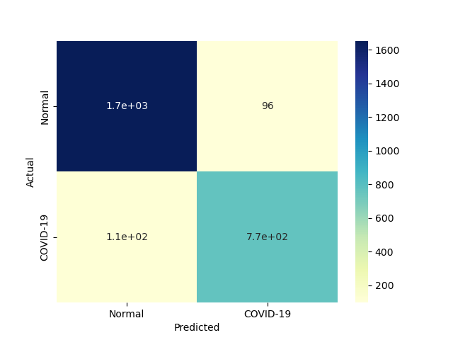 |
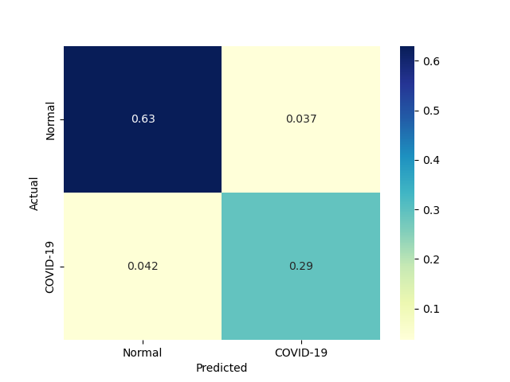 |
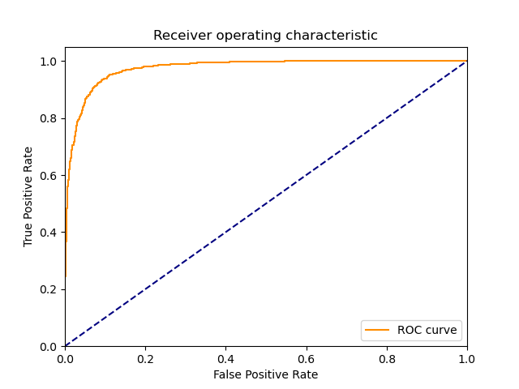 |
| 4 |
KNeighborsClassifier |
Classifier implementing the k-nearest neighbors vote |
0.007809 |
0.738106 |
656 |
1642 |
108 |
219 |
0.749714 |
0.938286 |
0.858639 |
0.875429 |
0.124571 |
0.800488 |
1.545203 |
102.503143 |
1.084516 |
|
|
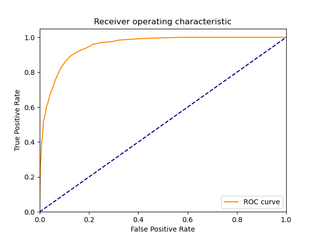 |
| 1 |
RealBoost |
An RealBoost classifier |
8.233052 |
0.031251 |
642 |
1555 |
195 |
233 |
0.733714 |
0.888571 |
0.767025 |
0.836952 |
0.163048 |
0.750000 |
1.310944 |
0.091096 |
23.998901 |
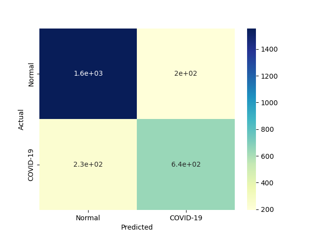 |
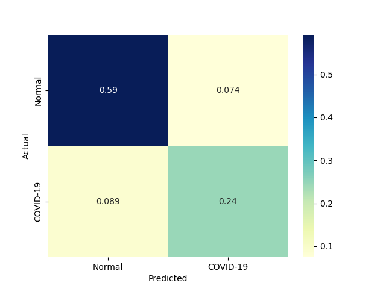 |
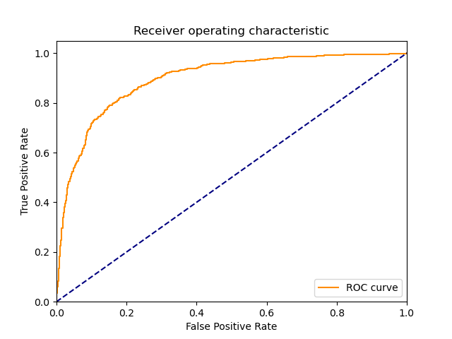 |
| 3 |
GaussianNBC |
Gaussian Naive Bayes (GaussianNB) |
0.031243 |
0.015622 |
633 |
1361 |
389 |
242 |
0.723429 |
0.777714 |
0.619374 |
0.759619 |
0.240381 |
0.667370 |
1.037705 |
21.360714 |
42.720124 |
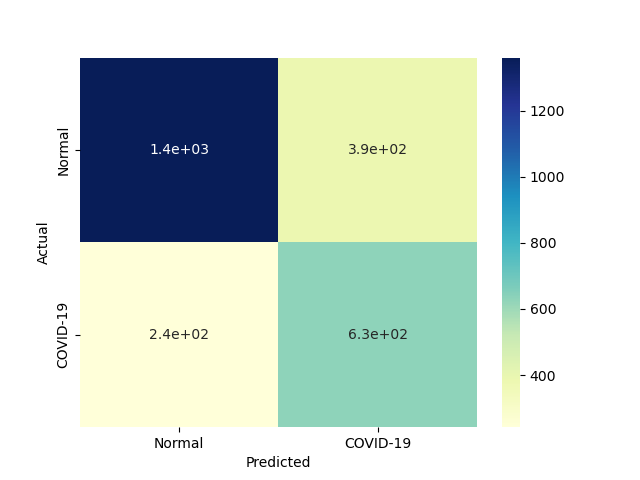 |
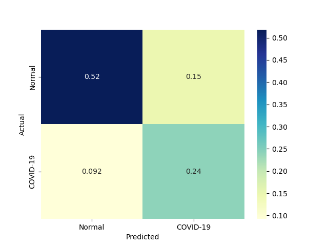 |
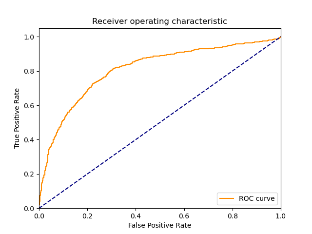 |
| 2 |
BernoulliNBC |
Naive Bayes classifier for multivariate Bernoulli models |
0.066394 |
0.019490 |
479 |
1541 |
209 |
396 |
0.547429 |
0.880571 |
0.696221 |
0.769524 |
0.230476 |
0.612924 |
1.029721 |
9.231636 |
31.447730 |
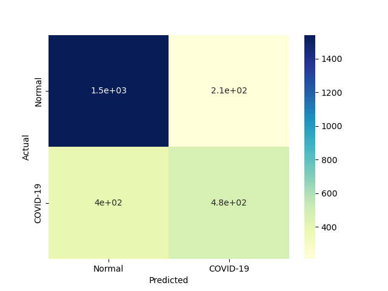 |
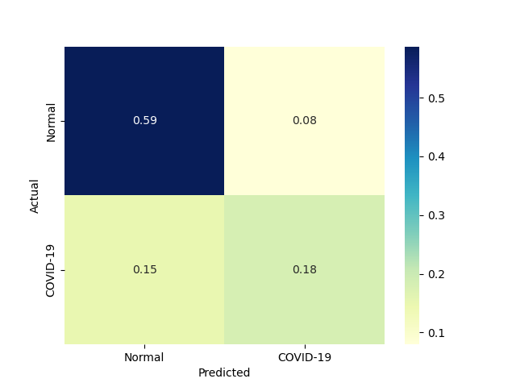 |
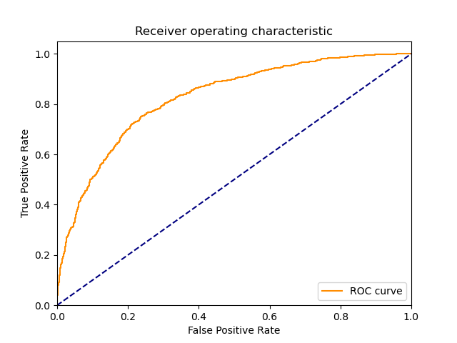 |
| 5 |
LinearSVM |
Linear Support Vector Classification |
5.047788 |
0.004005 |
665 |
1247 |
503 |
210 |
0.760000 |
0.712571 |
0.569349 |
0.728381 |
0.271619 |
0.651003 |
0.970695 |
0.128968 |
162.549487 |
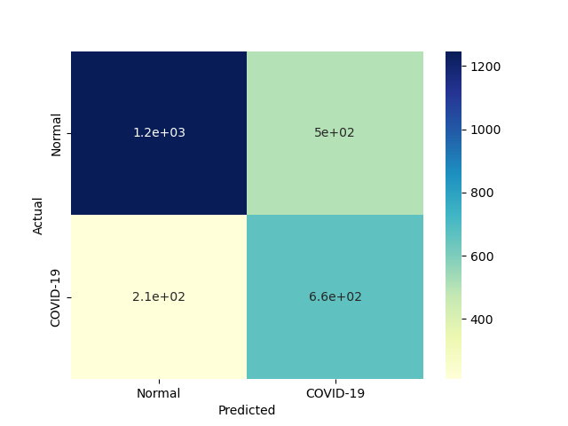 |
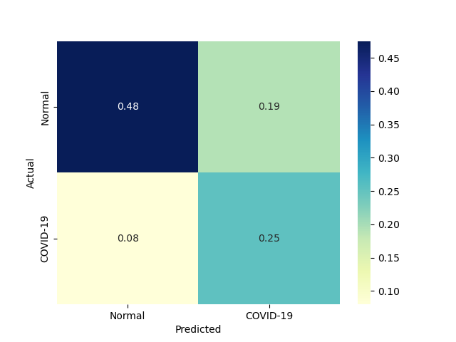 |
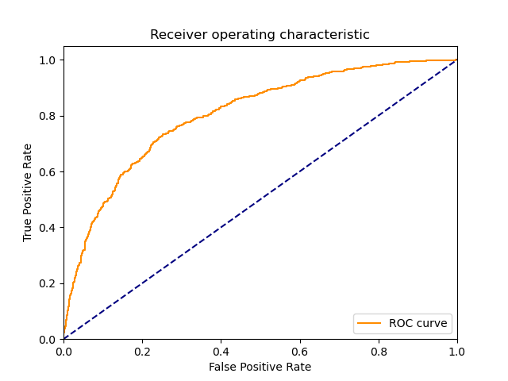 |
| 7 |
LP |
Linear perceptron classifier |
0.042960 |
0.000000 |
693 |
1012 |
738 |
182 |
0.792000 |
0.578286 |
0.484277 |
0.649524 |
0.350476 |
0.601041 |
0.836255 |
13.990730 |
inf |
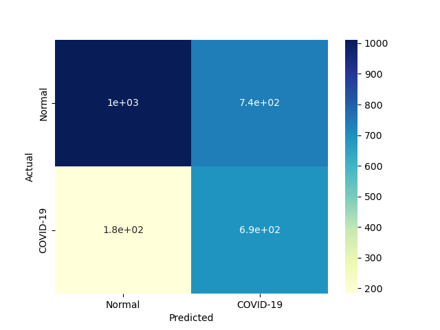 |
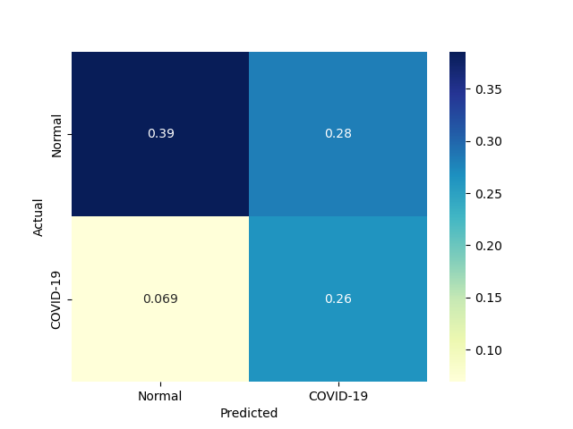 |
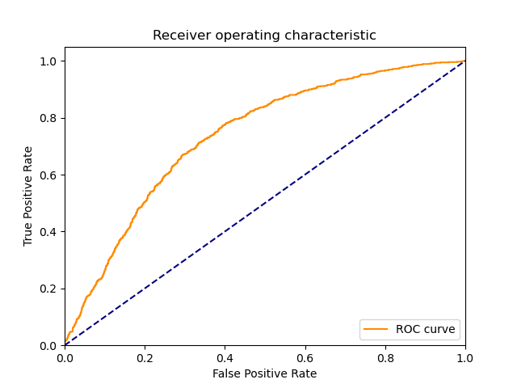 |
| 0 |
DiscreteNBC |
DiscreteNBC |
2.957987 |
1.645404 |
131 |
1533 |
217 |
744 |
0.149714 |
0.876000 |
0.376437 |
0.633905 |
0.366095 |
0.214227 |
0.583872 |
0.072423 |
0.130197 |
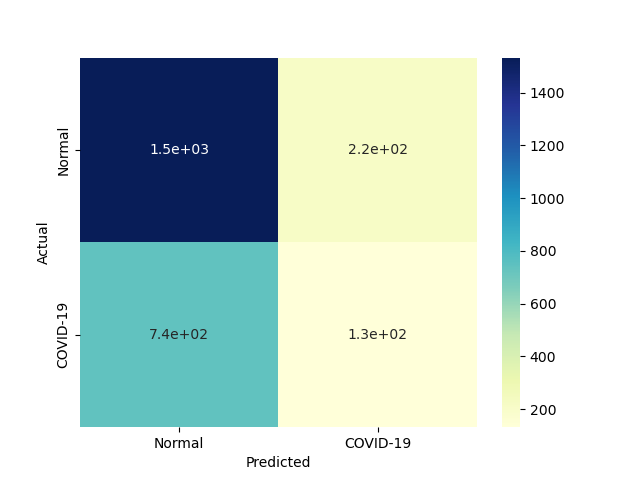 |
|
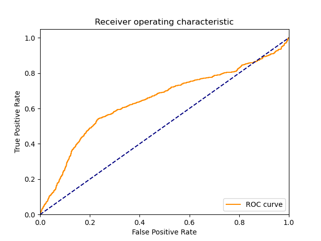 |
{kind=link}
{kind=link}
{kind=link}
{kind=link}
{kind=link}
{kind=link}
{kind=link}
{kind=link}
{kind=link}
{kind=link}
{kind=link}
{kind=link}
{kind=link}
{kind=link}
{kind=link}
{kind=link}
{kind=link}
{kind=link}
{kind=link}
{kind=link}
{kind=link}
{kind=link}
{kind=link}
{kind=link}